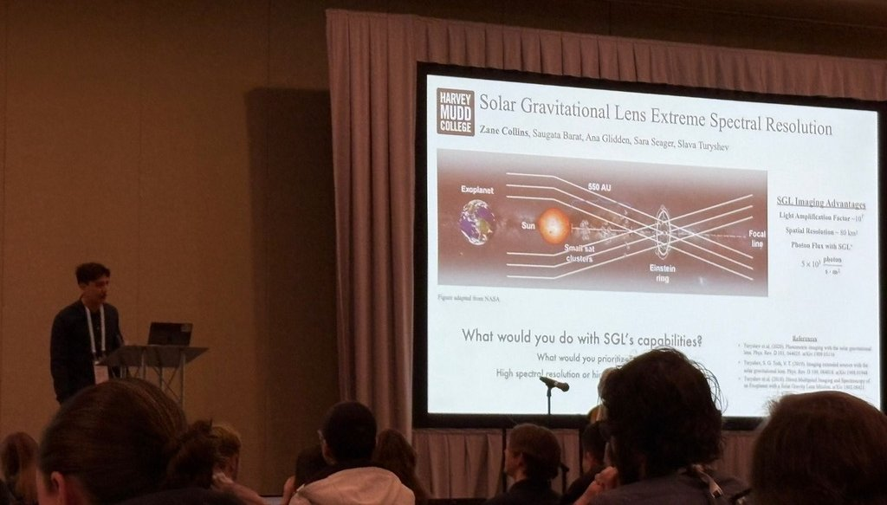

May 2025 – present
MIT · Cambridge, MA
MIT · Cambridge, MA
Solar Gravitational Lens biosignature spectroscopy
Research Assistant, Seager group · with A. Glidden, S. Barat, S. Turyshev
- Built a Python spectroscopic modeling pipeline largely from first principles to model high-resolution transmission spectra of Earth-like exoplanets amplified by the Solar Gravitational Lens.
- Learned the HITRAN API from scratch for high-resolution molecular line data, building from test scripts to full models, and used colorednoise to simulate noise in synthetic observations.
- Quantified biosignature detectability limits as a function of spatial resolution, spectral resolution, and signal-to-noise, using cross-correlation and log-likelihood analysis.
Tools Python · NumPy · SciPy · HITRAN HAPI · colorednoise
At JWST-like resolving power (R ~ 10³), overlapping features from different molecules blend together and make trace-gas biosignatures hard to identify. The SGL’s photon amplification (~10¹¹ at ~1 μm) can instead be spent on spectroscopy, reaching R ~ 10⁶–10⁷, with practical limits set by the solar-corona background, the SGL point-spread function, and reconstruction losses.
First-author poster, AASTCS 11: Exoplanet Atmospheres (2026). First-author manuscript in preparation.
